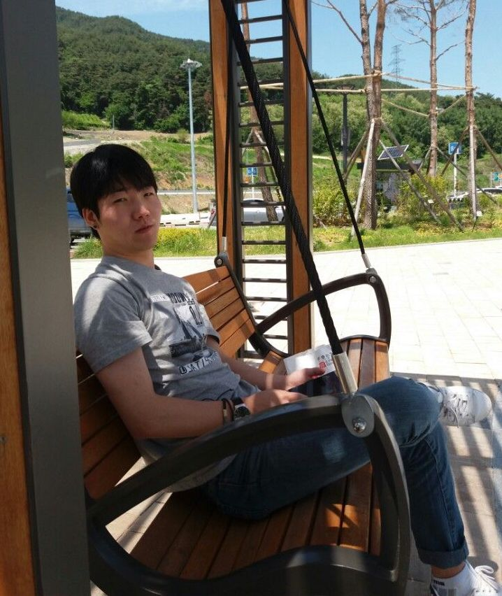

Our Story
eVolunteer was founded in April 2019 by 5 incredible individuals under the shared belief in a better future built through education. What good is taking all these environmental measures if the people that populate this Earth are uneducated and blind to change. The youth are the future and will be the ones that will have to deal with the toughest of challenges. Instilling good habits, environmental awareness on our youth and creating a positive culture is the first step in saving our planet. The 5 founders realized this idea and thought, why not integrate eco-friendly volunteering sessions with the current school volunteering requirements. Times have changed and schools need to adapt and eVolunteer is the perfect platform.
"Promoting a Healthy Culture to strengthen eco-literacy, patterns of human knowledge and creative expression,and develop symbolic thought and social learning." We stand by our mission statement and it's fundemental principles and hope others will soon follow along.
"Promoting a Healthy Culture to strengthen eco-literacy, patterns of human knowledge and creative expression,and develop symbolic thought and social learning." We stand by our mission statement and it's fundemental principles and hope others will soon follow along.
Meet the team


The 5 of us are all from Set C of CST Term 1 (January). We all have a good sense of humour and share similar views on life, thus developing a close friendship. We started eVolunteer originally as a side project but it has picked up rapidly and become what it is today.

Paul Kim
Back-End Specialist
I have been working at the City of Coquitlam as a student advisor for about 2 years now and when I first heard about the idea of eVolunteer I was instantly sold. Connecting students that are required to volunteer and eco-friendly organizations that are in need of volunteers is win-win. Rather than sending out hundreds of emails signing up students to other volunteering events, they can now find all this information on one application and sign up hassle free. I'm extremely excited to be working on this team and look forward to what the future brings.
Back-End Specialist
I have been working at the City of Coquitlam as a student advisor for about 2 years now and when I first heard about the idea of eVolunteer I was instantly sold. Connecting students that are required to volunteer and eco-friendly organizations that are in need of volunteers is win-win. Rather than sending out hundreds of emails signing up students to other volunteering events, they can now find all this information on one application and sign up hassle free. I'm extremely excited to be working on this team and look forward to what the future brings.
Victor Wu
CEO
I remember the scare of almost not graduating highschool because I was short a couple volunteering hours. Thinking about it now, I realized that most teenagers out there do not take initiative and that the current volunteering system would not do. We need to create a simple to use web application that allow students to easily sign up and give back to the community. That is why I joined eVolunteer.
CEO
I remember the scare of almost not graduating highschool because I was short a couple volunteering hours. Thinking about it now, I realized that most teenagers out there do not take initiative and that the current volunteering system would not do. We need to create a simple to use web application that allow students to easily sign up and give back to the community. That is why I joined eVolunteer.

Eric Kim
CTO
There area where I live has seen severe deforrestation. Hundreds of acres of forrests are being cut down to make way for new neighbourhoods. Bears, deer, ... countless animal species have seen their homes destroyed. We need a change and it starts with our children. They are the future, the ones that will soon have to solve these issues. My wish is that eVolunteer can bring positive change through education.
CTO
There area where I live has seen severe deforrestation. Hundreds of acres of forrests are being cut down to make way for new neighbourhoods. Bears, deer, ... countless animal species have seen their homes destroyed. We need a change and it starts with our children. They are the future, the ones that will soon have to solve these issues. My wish is that eVolunteer can bring positive change through education.
Shane Feng
Front-End Specialist
Finding volunteering hours in Coquitlam during highschool was difficult. Events were unorganized and signing up was often a lengthly proccess. Many many times I would show up to the volunteering sessions and the staff in charge would not have enough tasks laid out for everyone. As a result, several students would stand around with nothing to do, nothing to learn. I am so happy to be a part of eVolunteer's journey and it's mission to transform the future.
Front-End Specialist
Finding volunteering hours in Coquitlam during highschool was difficult. Events were unorganized and signing up was often a lengthly proccess. Many many times I would show up to the volunteering sessions and the staff in charge would not have enough tasks laid out for everyone. As a result, several students would stand around with nothing to do, nothing to learn. I am so happy to be a part of eVolunteer's journey and it's mission to transform the future.
Edmond Leung
Chairman
There are so many benefits to volunteering. It builds confidence and gives students a chance to meet others and build new bridges. Furthermore, the act of volunteering is rewarding. Devoting your time and effort helping your local community is an act of kindness and love. Why not take it a step further and help the environment as well. This Earth is everyone's home and we should all play a part in maintaining it. It is eVolunteer's mission to follow this principle and promote change in our lives.
Chairman
There are so many benefits to volunteering. It builds confidence and gives students a chance to meet others and build new bridges. Furthermore, the act of volunteering is rewarding. Devoting your time and effort helping your local community is an act of kindness and love. Why not take it a step further and help the environment as well. This Earth is everyone's home and we should all play a part in maintaining it. It is eVolunteer's mission to follow this principle and promote change in our lives.